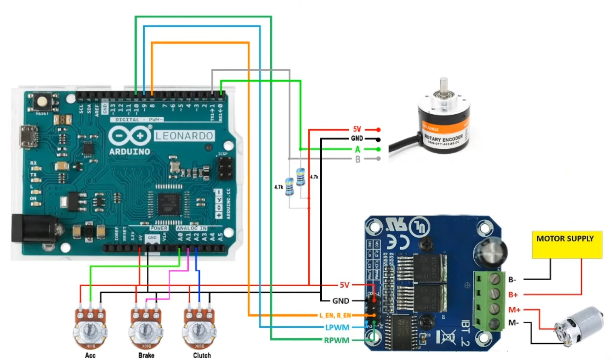

A custom 24V belt-driven sim racing wheel base powered by Arduino Pro Micro, BTS7960 driver, and RS-775 motor.
Arduino Pro Micro (ATmega32U4) utilizing native USB controller stack.
BTS7960 43A H-Bridge powered by a 24V SMPS supply.
400 PPR Optical Rotary Encoder using hardware interrupt channels.
1:4 gear system optimised for high torque.
| Component | Quantity | Notes |
|---|---|---|
| Arduino Pro Micro | 1 | ATmega32U4 5V/16MHz variant required |
| BTS7960 Motor Driver | 1 | 43A H-Bridge module with heatsink |
| RS-775 Motor | 1 | High-speed variant (12V–24V) |
| 24V SMPS Power Supply | 1 | Minimum 10A - 15A rating recommended |
| 400 PPR Rotary Encoder | 1 | Optical quadrature type |
| 10k Potentiometers | 2–3 | Pedal axis mapping (Gas, Brake, Clutch) |
All component housings, mounts, and pulleys were designed for direct printing without complex support structures.

| Module Pin | Target Connection | Function |
|---|---|---|
| BTS7960 RPWM / LPWM | Digital Pins 10 & 9 | Hardware PWM Direction Signals |
| BTS7960 R_EN / L_EN | Digital Pin 8 | Logic Enable (5V output pin) |
| Encoder Channel A / B | Digital Pins 0 (RX) & 1 (TX) | Hardware Interrupt Inputs |
| Pedals (Gas / Brake) | Analog Pins A0 & A1 | 0–5V Potentiometer Wiper Inputs |
Use XLoader to flash the Arduino with EMCLite0932.hex. Use WheelTest to calibrate and test force feedback.
Forza Horizon 5 rejects raw DIY hardware IDs. To run without crashes:
Hush.